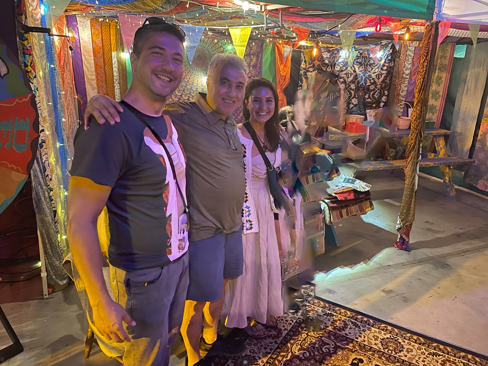

Every piece we sell has already lived a life before it reaches your home. That's not a marketing line — it's the entire premise of what we do. We don't manufacture anything. We don't commission reproductions. Every vintage Turkish kilim rug, every kilim pillow cover, every hand-embroidered Uzbek suzani textile in our shop was made decades ago by someone whose name we'll likely never know, using techniques passed down through generations of weavers and embroiderers.
People ask us fairly often how a small shop shipping out of Philadelphia ends up with rugs from Anatolian villages and dowry textiles from Uzbekistan. The honest answer is: slowly, relationship by relationship, market by market. Here's what that actually looks like.
Why We Don't Manufacture Anything
There's a version of this business that would be a lot easier to scale. We could commission new kilim-style pillow covers, printed to look hand-loomed, and reorder the same design a thousand times. A lot of "boho decor" brands do exactly that, and there's nothing wrong with it — it's just not what we sell.
What we sell is vintage, full stop. That word means something specific to us: an object with a documented history, made by hand, using natural materials, before mass production existed for this category. It means every piece has small irregularities — a slightly uneven row of stitches, a subtle shift in dye lot, a wear pattern that tells you where it sat for thirty years. Those aren't flaws. They're the entire reason to buy vintage instead of new.
Türkiye — Where the Kilims and Rugs Begin
Our Turkish pieces — the flatwoven kilim rugs, and the kilim pillow covers we cut and finish from vintage kilim fragments — come out of Anatolia, the historic heartland of Turkish weaving. Kilims are woven, not knotted: a weft-faced plain weave technique that produces a flat, reversible textile rather than a plush pile rug. That construction is part of why kilims work so well as pillow covers — the weave itself is already dense, durable, and graphic.
Sourcing here means working through village markets, family collections, and small dealers who've spent their own careers building relationships with weaving families across the region. Wool is hand-spun. Dyes were historically drawn from madder root, indigo, and other plant sources, which is exactly why the colors in a genuinely old kilim have a depth and variation you don't get from synthetic dye baths. When a kilim comes to us with even wear across the surface and slightly irregular geometric repeats, that's usually a good sign it's the real thing.

A finished kilim pillow cover, cut and stitched from a vintage flatwoven kilim.
Uzbekistan — The Embroidery Tradition Behind Every Suzani
Suzani is a different tradition entirely, and it's a common mix-up — people sometimes assume "suzani" is another word for a Turkish textile. It isn't. Suzani comes from Uzbekistan and the wider Central Asian region, and unlike a kilim, it isn't woven at all. It's embroidered, historically by hand with silk or cotton thread on a cotton or linen base.
The tradition is tied to marriage: suzani textiles were traditionally stitched by a bride, her mother, and female relatives as part of a dowry, worked on over months or years before a wedding. The motifs carry meaning — pomegranates and florals for fertility and abundance, sun and moon disks for protection. What you're looking at in a genuine antique or vintage suzani isn't decoration for its own sake. It's generations of women's labor and symbolism, stitched by hand, piece by piece.
That's also why no two suzani pieces are ever identical, even when the motifs look similar at a glance. Hand embroidery has a rhythm and irregularity that machine embroidery simply doesn't replicate, and it's part of what makes each cushion cover we carry genuinely one of a kind.
What "One of a Kind" Actually Means Here
We use that phrase a lot, and we want it to mean something real rather than just being a sales tag. Because we don't manufacture anything, when a specific kilim pillow cover or suzani cushion sells, it is gone. We can't reorder it. We can't restock the exact pattern in a different colorway. The next piece we list will be a different textile, sourced separately, with its own history.
That has real implications if you're shopping with us: if something catches your eye, it's worth not waiting too long. It also means every purchase is inherently sustainable in a way new manufacturing can't be — you're not creating demand for new production, you're extending the life of an object that already exists.
From Our Hands to Your Home

The family behind bkCAMUR Home at one of our pop-up markets — sourcing and selling these pieces is a family effort, start to finish.
Once a piece is selected, cleaned, and (for kilim fragments) finished into a pillow cover, it ships from the US with free shipping to anywhere in the continental United States. We pack every textile with care, because by the time it reaches you, it's already survived decades — the least we can do is make sure the last leg of the journey is a gentle one.
If you're an interior designer, stylist, or retailer looking to source these pieces at volume, our trade program works the same way: real sourcing, not reproduction, at pricing built for resale.
— The bkCAMUR Home team, Philadelphia
Ready to find your piece?
Every listing is a real, current piece — one of a kind and sold on a first-come basis.
Shop the Collection